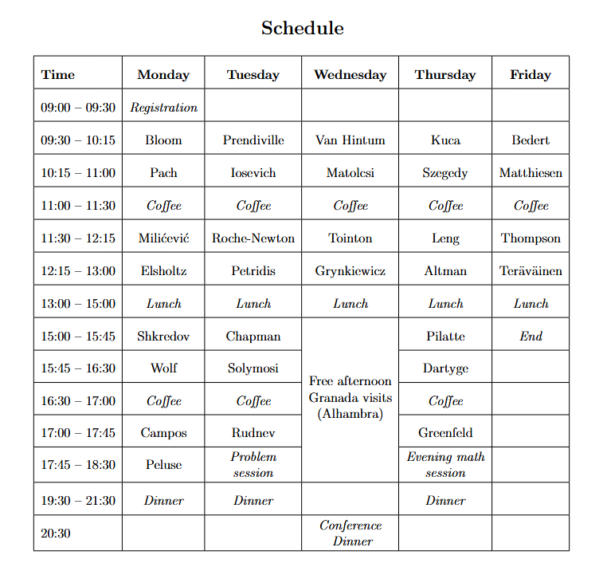
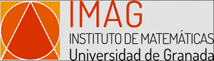

The afternoon of Wednesday June 4th will be free. We wanted to provide information on one of the most interesting visits in Granada that can be made during that time: the Alhambra palace. The tickets can be bought online at the official website. To give you the freedom to choose your visit time (and also because of personal ID information required by the ticket purchase system), we prefer to let each of you buy your ticket individually if you are interested in this visit. In this case, we recommend that you secure your ticket as soon as you can, as tickets for certain dates can run out quickly (sometimes months before the date). The ticket is valid for the whole day. Seeing the whole monumental complex can take about 3 hours. However, within the complex, the visits to the Nasrid Palaces have more specific time slots from which to choose (these palaces take approximately 30 minutes to visit). For the selection of your visit time in the afternoon of Wednesday 4/6, bear in mind (for managing times and travel) that your place of accommodation will be Hotel Turia and that the conference dinner will begin on Wednesday at 20:30 at Carmen de la Victoria. A PDF file with more details on the ticket purchase is available.
The workshop "New trends in arithmetic combinatorics and related fields" adopts IMAG’s inclusion policy. This workshop promotes international cooperation through intellectual openness and fosters an intercultural approach of solidarity and inclusion. The organizers are actively committed to offer a welcoming and inclusive environment to all the participants and to prevent all forms of discrimination, whether based on ethnic, national or social origin, physical characteristics, gender, sexual orientation, religion, disability or age, etc. Discriminatory attitudes, harassment, aggressive behaviour, abuse of dominant positions and acts of repression are prohibited. If you have been victim or witness of a situation of discrimination or harassment, you can get in touch with one of the organizers or directly by email with IMAG (at the address imag at ugr.es). Inappropriate behaviour will be firmly responded to, and reported to IMAG, who will decide on possible legal consequences.
